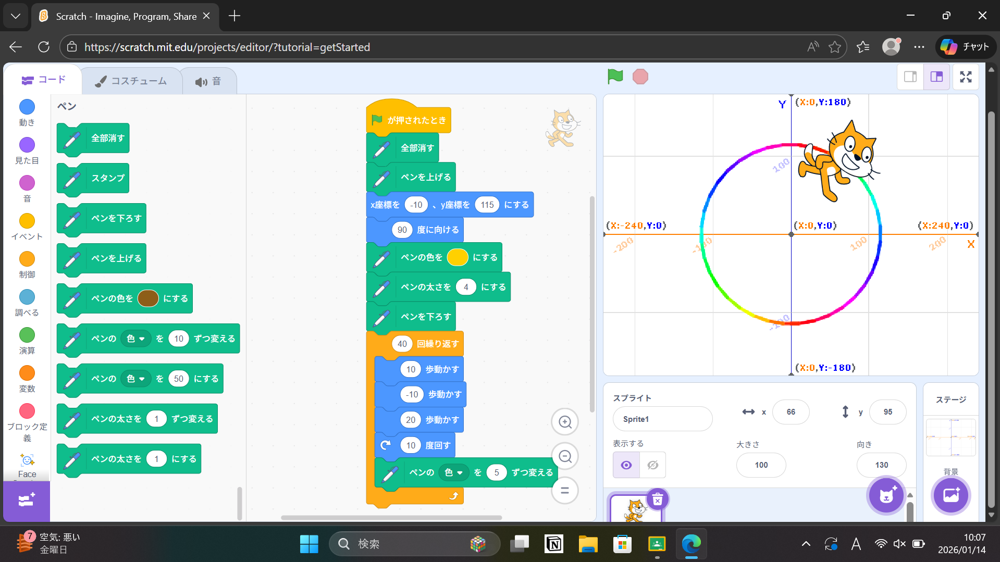
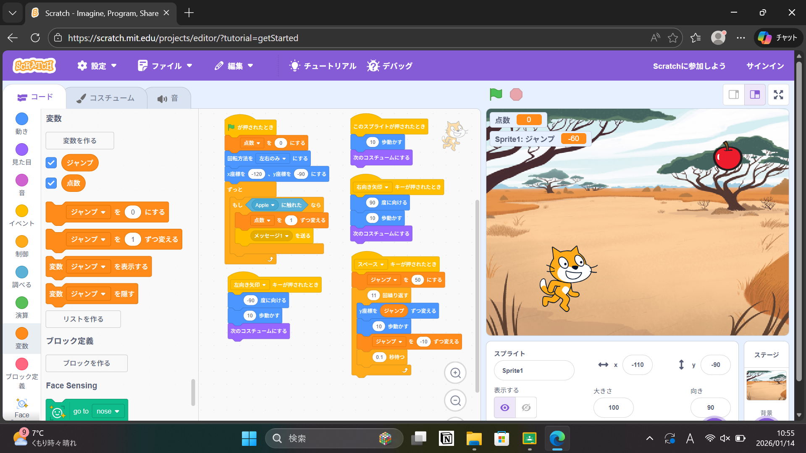

1週目のレポート ： 公大高専１年実習I-1
7班31番 Yo-40
第1週目
1-1 サイエンスアート

1.内容
猫が虹色の円を描くプログラムを作成した。実際は円を描いたのではなく、短い線をたくさんつな
ぎ合わせて円を描いているように見せた。ペンの太さや色も変えることができると分かった。
2.感想
スクラッチを使ってサイエンスアートをしたことが初めてだったので、わからないことが多かった。
しかし、実際に自分で作成したプログラムが動いてアートを描いたときとてもきれいで感動した。
1-2 ゲーム

1.内容
猫が移動して落ちてくるリンゴをつかむゲームのプログラムを作成した。猫とリンゴに
それぞれ違うプログラムをして動かした。また、ジャンプ機能のプログラミングの仕方も分かった。
2.感想
ゲームをプログラムしたことが初めてだったので、難しいと感じることが多かった。しかし、自分がプロ
グラムした通りにキャラクターが動いたときとてもうれしかった。
1-3 ホームページ作成
私のホームページ
1.内容
Git Japanというアプリを使って、ホームページを作成した。ターミナルの＜ｂｒ＞と＜ｂｒ＞との間に
文章をを打ち込むことで、その文章がホームページに映し出されることを学習した。
2.感想
ホームページを作成したことは情報の授業の課題以来だったため、初めてではなかったが同じアプリでは
ないため少し不慣れだった。しかし、うまくホームページに自分がしたことが映し出された時はうれしかった。
各ページへのリンク
1週目のレポート
2週目のレポート
3週目のレポート
私のホームページ